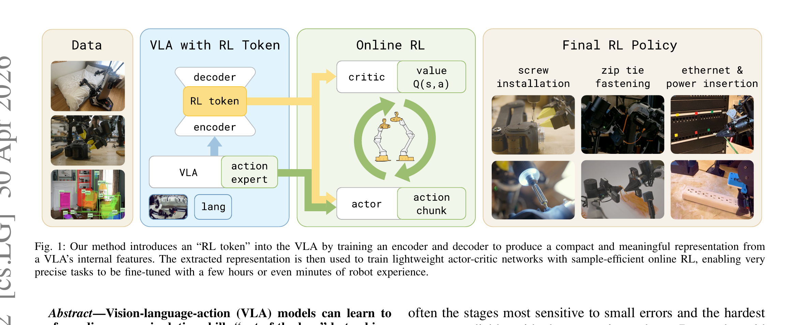

RL Token: Bootstrapping Online RL with Vision-Language-Action Models
Xu 等 · Physical Intelligence / UC Berkeley · 2026 · arXiv:2604.23073 · Zotero TZ58FSK4
它优化的不是“理解能力”，而是从通用先验到具体硬件/任务精度之间的最后一公里。
§1 Introduction：作者为什么必须做这篇工作
预训练 VLA 能完成任务，却常在插接、紧固等最后几厘米的接触阶段变慢或失败。直接对数十亿参数做在线 RL 不仅算力重，还会让少量稀疏奖励破坏预训练能力。作者真正问的是：能否从 VLA 内部取出一个足够小、又保留任务语义的接口，让 RL 只训练轻量模块？
RL Token 的答案是从 VLA 主干暴露一个紧凑表征，并在其上训练小型 actor–critic。主策略继续提供动作先验，RL 只负责局部修正；于是探索空间从“整个大模型参数”缩成“低维状态接口与残差动作”。
展开原文 · 核心动机
“a compact readout representation that preserves task-relevant pretrained knowledge”
§2 Related Work：它接在哪些路线之后
它承接两条路线。第一条是 HIL-SERL、RLPD 等真实机器人在线 RL：样本效率高，但通常从专用视觉策略出发。第二条是 VLA 后训练：π0.6、EXPO-FT 等把 RL 接到大基座，却仍要处理昂贵前向和稳定性。
RL Token 与冻结视觉编码器不同：它不是随便取一层 feature，而是让 VLA 训练时显式形成可供 RL 读取的 token。与 LoRA 全参微调相比，它把信用分配限制在小 actor–critic，并用基座动作锚定避免灾难性漂移。
§3 问题设定：状态、动作与反馈
给定观测与语言指令，VLA 产生动作 chunk；RL token 同时输入 critic 与残差 actor。在线数据只需记录 token、动作、奖励和下一 token，避免每次更新反传整个 VLA。
§4 方法总览：沿原图走一遍
上一节确定了学习接口；现在看论文原图，追踪观测如何变成动作、环境反馈又如何回到可训练模块。

1. VLA 编码图像、语言与本体状态
VLA 主干联合编码多视角图像、语言指令与机器人本体状态，先形成任务相关上下文。基座 decoder/action expert 仍给出原始动作，因此系统一开始就继承预训练技能，而不是由 RL 从零探索。
输入是什么：相机图像或视频，加上任务指令和机器人当前状态。它们还是原始观测，模型尚未把它们变成可用于预测或控制的特征。
这一步究竟做什么：VLA 主干联合编码多视角图像、语言指令与机器人本体状态，先形成任务相关上下文。基座 decoder/action expert 仍给出原始动作，因此系统一开始就继承预训练技能，而不是由 RL 从零探索。
输出到哪里：一组比原始输入更紧凑的内部特征；它不是最终动作或画面。这个结果会交给下一步“读取专用 RL token 作为紧凑状态”继续处理。
为什么不能省略：模型不能高效地直接在所有原始像素和长序列上推理；这一步把信息压成后续模块能处理、比较和复用的形式。
2. 读取专用 RL token 作为紧凑状态
专用 RL token 从同一上下文中抽取紧凑读出，作为小 critic 与 residual actor 的状态。它既含语义与视觉信息，又避免在线 replay 保存和反传整个大模型 hidden sequence。
输入是什么：来自上一步“VLA 编码图像、语言与本体状态”的产物：一组比原始输入更紧凑的内部特征；它不是最终动作或画面。本步骤还会按论文设置读取当前条件、时间步或训练信号。
这一步究竟做什么：专用 RL token 从同一上下文中抽取紧凑读出，作为小 critic 与 residual actor 的状态。它既含语义与视觉信息，又避免在线 replay 保存和反传整个大模型 hidden sequence。
输出到哪里：一组比原始输入更紧凑的内部特征；它不是最终动作或画面。这个结果会交给下一步“critic 估计动作价值，actor 产生动作修正”继续处理。
为什么不能省略：模型不能高效地直接在所有原始像素和长序列上推理；这一步把信息压成后续模块能处理、比较和复用的形式。
3. critic 估计动作价值，actor 产生动作修正
critic 评估候选动作价值，residual actor 根据 RL token 输出小幅修正。价值学习负责判断精细接触阶段哪种修正更好，actor 只在基座薄弱处移动，不重写通用任务理解。
输入是什么：来自上一步“读取专用 RL token 作为紧凑状态”的产物：一组比原始输入更紧凑的内部特征；它不是最终动作或画面。本步骤还会按论文设置读取当前条件、时间步或训练信号。
这一步究竟做什么：critic 评估候选动作价值，residual actor 根据 RL token 输出小幅修正。价值学习负责判断精细接触阶段哪种修正更好，actor 只在基座薄弱处移动，不重写通用任务理解。
输出到哪里：一个分数、奖励或价值估计，用来比较候选，而不是直接控制机器人。这个结果会交给下一步“基座动作与修正合成后执行并回写 replay”继续处理。
为什么不能省略：只有生成候选而没有评价标准，模型不知道哪个结果更好；这一步把‘好坏’变成可比较的学习信号。
4. 基座动作与修正合成后执行并回写 replay
最终动作是基座动作与受限 residual 的组合，执行后把 token、动作、奖励和下一 token 写入 replay。off-policy 更新可反复使用这些紧凑转移，形成数分钟到数小时的样本高效适配。
输入是什么：来自上一步“critic 估计动作价值，actor 产生动作修正”的产物：一个分数、奖励或价值估计，用来比较候选，而不是直接控制机器人。本步骤还会按论文设置读取当前条件、时间步或训练信号。
这一步究竟做什么：最终动作是基座动作与受限 residual 的组合，执行后把 token、动作、奖励和下一 token 写入 replay。off-policy 更新可反复使用这些紧凑转移，形成数分钟到数小时的样本高效适配。
输出到哪里：可发送给机器人控制器的动作，以及执行后重新观测到的真实状态。这是图中这条链路的最终产物，随后会进入真实执行、模型更新或指标评测。
为什么不能省略：机器人动作会改变下一次观测；只有执行后重新读取现实，才能发现预测误差并阻止错误连续累积。
§5 机制细拆：为什么这个接口可能有效
critic 在 RL token 上学习接触阶段的长程价值；actor 只纠正基座最薄弱的动作片段。
冻结或锚定 VLA 主体，更新轻量 actor–critic，显著降低在线梯度成本。
它优化的不是“理解能力”，而是从通用先验到具体硬件/任务精度之间的最后一公里。
§6 目标函数：公式逐项读
下面的教学化表达抓住论文的主要更新方向；读它时不要只看符号，要检查回报作用在哪个变量、哪些部分保持冻结。
- $a_t^{\mathrm{VLA}}$
- 预训练 VLA 给出的基座动作，提供安全且有语义的行为先验。
- $z_t^{\mathrm{RL}}$
- VLA 暴露的 RL token；它压缩当前任务、视觉与执行状态。
- $\delta a_\phi$
- 小 actor 学到的残差修正，而不是重新生成整段行为。
- $\alpha$
- 修正强度；越小越保守，越大越依赖在线 RL。
§7 训练与评测：数字在什么条件下成立
四个真实机器人精细任务：螺钉安装、扎带固定、充电器插入与网线插入；比较基座 VLA、轻量 RL 适配以及执行速度。
| 学习接口 | 给定观测与语言指令，VLA 产生动作 chunk；RL token 同时输入 critic 与残差 actor。在线数据只需记录 token、动作、奖励和下一 token，避免每次更新反传整个 VLA。 |
|---|---|
| 信用分配 | critic 在 RL token 上学习接触阶段的长程价值；actor 只纠正基座最薄弱的动作片段。 |
| 更新范围 | 冻结或锚定 VLA 主体，更新轻量 actor–critic，显著降低在线梯度成本。 |
| 实验覆盖 | 四个真实机器人精细任务：螺钉安装、扎带固定、充电器插入与网线插入；比较基座 VLA、轻量 RL 适配以及执行速度。 |
§8 结果怎么读：证据与归因
论文报告数分钟到数小时的真实练习即可显著提高成功率，最难阶段速度最高提升约 3 倍；部分插接任务的执行速度超过人类遥操作中位水平。
§9 复现与工程检查
必须保存基座动作、残差动作和最终动作三条轨迹；分别统计成功率与任务完成时间；固定 VLA checkpoint，只改变 RL token/actor–critic，才能证明收益来自接口设计。
- 先复现冻结的 SFT/BC 基线，再打开 RL 或偏好更新。
- 同时记录环境步、墙钟时间、人工干预、策略版本和推理延迟。
- 逐任务保存失败轨迹，避免平均成功率掩盖分布偏移。
§10 适用边界与研究启发
token 是否跨机器人、跨任务复用仍取决于预训练；残差过大会越过基座安全边界；四个任务主要是精细接触，不能直接外推到长程开放世界规划。